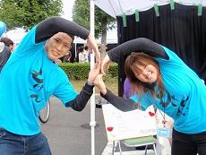

カラオケ大会
時間…16:30〜18:00(第一部)、19:00〜20:30(第二部)
場所…屋内ステージ(第二体育館)

みなさん、元気ですか？今年も弥生祭の時期がやってきました。弥生祭と言えば、カラオケ大会ですよね。 遅れましたが、今年のカラオケ大会の司会をやらせてもらう機械科４年の牧野と電子制御科４年の阿部です。 よろしくお願いします。
さて、今年の弥生祭のテーマは「WE
YAYOI FES」です。私たち実行委員は、この弥生祭が大好きです。みなさんもぜひ一緒に弥生祭で愛を叫びませんか？
当日参加も募集しています。豪華賞品とともにお待ちしています。
>>top
 カラオケ大会
カラオケ大会
 時間…16:30〜18:00(第一部)、19:00〜20:30(第二部)場所…屋内ステージ(第二体育館)
時間…16:30〜18:00(第一部)、19:00〜20:30(第二部)場所…屋内ステージ(第二体育館)
 みなさん、元気ですか？今年も弥生祭の時期がやってきました。弥生祭と言えば、カラオケ大会ですよね。
遅れましたが、今年のカラオケ大会の司会をやらせてもらう機械科４年の牧野と電子制御科４年の阿部です。
よろしくお願いします。 YAYOI FES」です。私たち実行委員は、この弥生祭が大好きです。みなさんもぜひ一緒に弥生祭で愛を叫びませんか？
みなさん、元気ですか？今年も弥生祭の時期がやってきました。弥生祭と言えば、カラオケ大会ですよね。
遅れましたが、今年のカラオケ大会の司会をやらせてもらう機械科４年の牧野と電子制御科４年の阿部です。
よろしくお願いします。 YAYOI FES」です。私たち実行委員は、この弥生祭が大好きです。みなさんもぜひ一緒に弥生祭で愛を叫びませんか？